🖥️ The Blender Interface
Walking into Blender for the first time is like stepping into the cockpit of a spaceship—there are buttons, panels, and windows everywhere! But here's the good news: what looks overwhelming at first is actually beautifully organized and designed for efficiency. In this lesson, we'll demystify Blender's interface and help you feel completely at home in your new digital studio.
📚 What You'll Learn
- Understanding Blender's overall interface philosophy and design
- Navigating the different areas, editors, and workspaces
- Mastering the 3D Viewport—your primary workspace
- Using the powerful Outliner to organize your scenes
- Understanding the Properties panel and its many sections
- Customizing your workspace for maximum efficiency
- Essential interface shortcuts that save time
⏱️ Estimated Time: 45-60 minutes
🎯 Project: Set up a customized workspace and navigate with confidence
In This Lesson
👀 First Impressions: Understanding the Layout
When you first launch Blender, you're greeted with what might seem like an overwhelming amount of information on screen. Take a deep breath—this is completely normal! Every professional Blender artist had the exact same reaction the first time they opened the software.
Let's start by understanding what you're looking at. Open Blender now and let's tour the default layout together.
The Default Startup Screen
When Blender launches, you'll see a splash screen with recent files and options to create a new project. Click anywhere outside this splash screen or press Esc to dismiss it. Now you're looking at Blender's default workspace.

💡 First-Time Setup
If this is your very first time opening Blender, you might see a Quick Setup dialog asking about mouse button preferences. The default settings work well for most people. If you're unsure, just click "Next" through the setup—you can always change these preferences later.
The Big Picture
Think of Blender's interface as a mission control center. Just like NASA doesn't put all their controls on one big screen, Blender divides different types of information into specialized areas. Each area is like a window focusing on a specific aspect of your work.
At the top, you'll see a row of tabs with names like "Layout," "Modeling," "Sculpting," and so on. These are workspaces—pre-configured arrangements of editors optimized for different tasks. Think of them as different "rooms" in your digital studio, each set up for a specific type of work.
The main area dominating the center of your screen is the 3D Viewport. This is where you'll spend most of your time, actually creating and manipulating 3D objects. It's your canvas, your stage, your workspace. Right now, you should see three default objects: a cube, a light, and a camera.
On the right side, you'll notice a panel with many sections and icons. This is the Properties panel, your control center for adjusting settings and properties of objects, materials, rendering, and more.
On the far right (or sometimes the left, depending on your setup), you'll see a list-like area showing Scene Collection, Camera, Cube, and Light. This is the Outliner, which provides a bird's-eye view of everything in your scene organized in a hierarchy—think of it as the family tree of your 3D scene.
At the very bottom, you might see a Timeline, which is used for animation. We'll explore that in depth when we get to animation lessons.
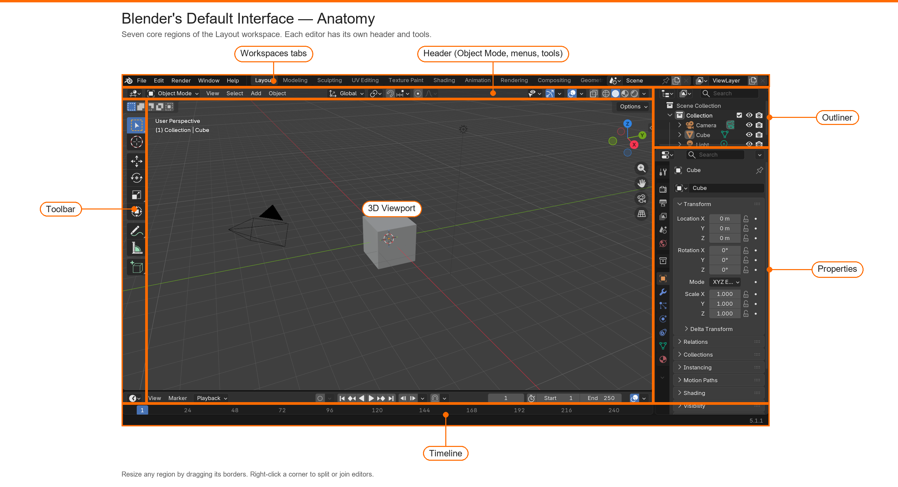
Don't Panic: You don't need to understand or use every panel and button right away. In fact, most professionals only regularly use a fraction of Blender's features for their daily work. We'll introduce elements as you need them, building your knowledge progressively.
🧩 Blender's Interface Philosophy
Before diving deeper, let's understand the thinking behind Blender's interface design. Understanding the "why" makes the "what" much easier to grasp.
Designed for Speed and Efficiency
Blender's interface is optimized for professional workflows where speed matters. Rather than hiding tools in nested menus, Blender makes frequently-used functions quickly accessible. This can seem cluttered at first, but once you learn where things are, you'll work incredibly fast.
Think of it like learning to drive a manual transmission car versus an automatic. Manual seems complicated at first, but gives you more control and efficiency once mastered. Blender is similar—there's a learning curve, but the payoff is tremendous speed and flexibility.
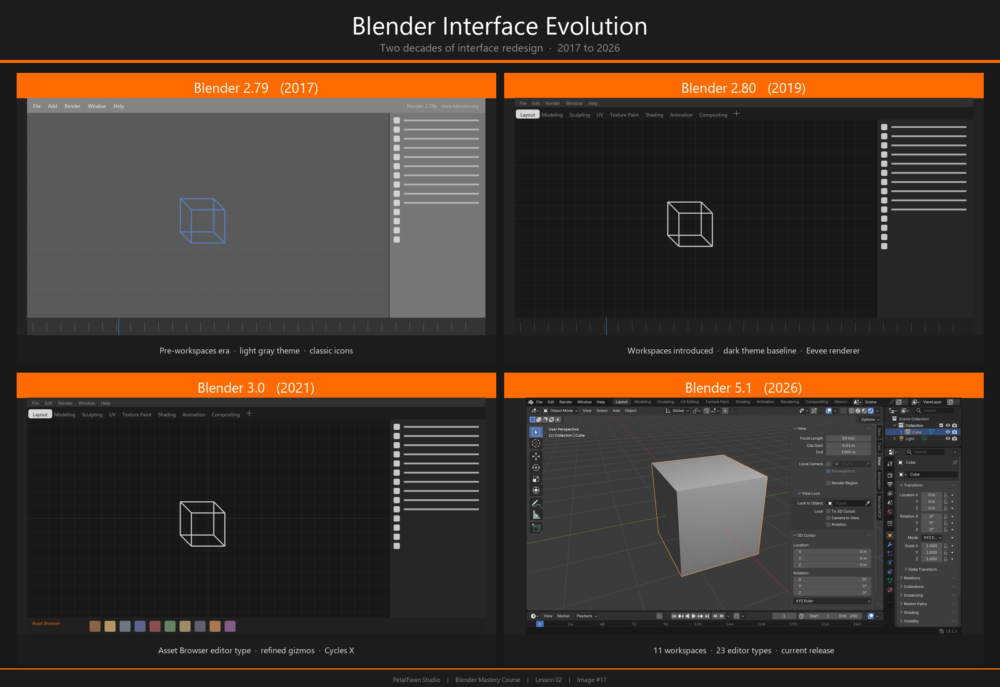
Context-Sensitive Design
Blender's interface is smart—it shows you what you need when you need it. Depending on what you're doing or what object you have selected, different options appear or become available. This context-sensitivity keeps the interface from being even more overwhelming, only showing relevant tools for your current task.
💡 The Three-Click Rule
Blender follows what developers call the "three-click rule"—most common operations should be achievable within three mouse clicks or keyboard shortcuts. This philosophy drives why tools are organized the way they are and why keyboard shortcuts are so important in Blender.
Non-Overlapping Windows
Unlike many programs where dialog boxes and windows pop up and cover your work, Blender uses a tile-based system. The interface is divided into areas that resize but don't overlap. This means you can always see your work while adjusting settings—no constant minimize-maximize-minimize dance.
This design choice comes from professional VFX studios where artists need to see their work and make adjustments simultaneously. It takes some getting used to if you're accustomed to traditional windowed interfaces, but it's significantly more efficient once you adapt.
Customization is Key
Blender doesn't force you into one way of working. Almost everything about the interface can be customized, moved, resized, or reconfigured. Different artists develop different layouts based on their workflow, hardware, and preferences. We'll explore customization later in this lesson.
Keyboard-Driven Workflow
While you can do almost everything in Blender with just a mouse, the software is designed with keyboard shortcuts as first-class citizens. Professional artists often work with one hand on the mouse and one on the keyboard, combining both for lightning-fast operations.
Don't worry—you don't need to memorize hundreds of shortcuts immediately! We'll introduce the most essential ones as we go, and they'll become second nature through practice.
Learning Mindset: The interface might feel unintuitive at first because it's optimized for speed once you know it, not necessarily for first-time discoverability. Be patient with yourself. In a few weeks, you'll be navigating this interface without conscious thought, and you'll appreciate the efficiency.
📐 Areas and Editors Explained
Now let's dive into the fundamental building blocks of Blender's interface: areas and editors.
What Are Areas?
An area is a region of the Blender window. When you look at Blender, the window is divided into these rectangular regions. Each area can display a different editor type. Think of areas as picture frames, and editors as the pictures you can put in those frames—you can swap which picture (editor) appears in which frame (area).
What Are Editors?
An editor is a specific type of tool or view. Blender has over 20 different editor types, each designed for a specific purpose. The most important ones you'll use regularly are:
- 3D Viewport: Your main workspace for creating and viewing 3D objects
- Outliner: Hierarchical list of all objects in your scene
- Properties: Settings and properties for objects and scenes
- Timeline: Animation timeline for keyframes and playback
- Shader Editor: Creating and editing materials (we'll cover this later)
- UV Editor: Unwrapping and editing UV maps for textures
- Image Editor: Viewing and editing images and textures
Changing Editor Types
In the top-left corner of every area, you'll see a small icon. This is the Editor Type selector. Click it to open a menu showing all available editor types. You can change any area to any editor at any time.
Try it now:
- Look at the top-left corner of your 3D Viewport
- You'll see an icon that looks like a cube with arrows (the 3D Viewport icon)
- Click it to see the menu of all available editors
- Don't change anything yet—just look at the options available
- Press
Escor click elsewhere to close the menu
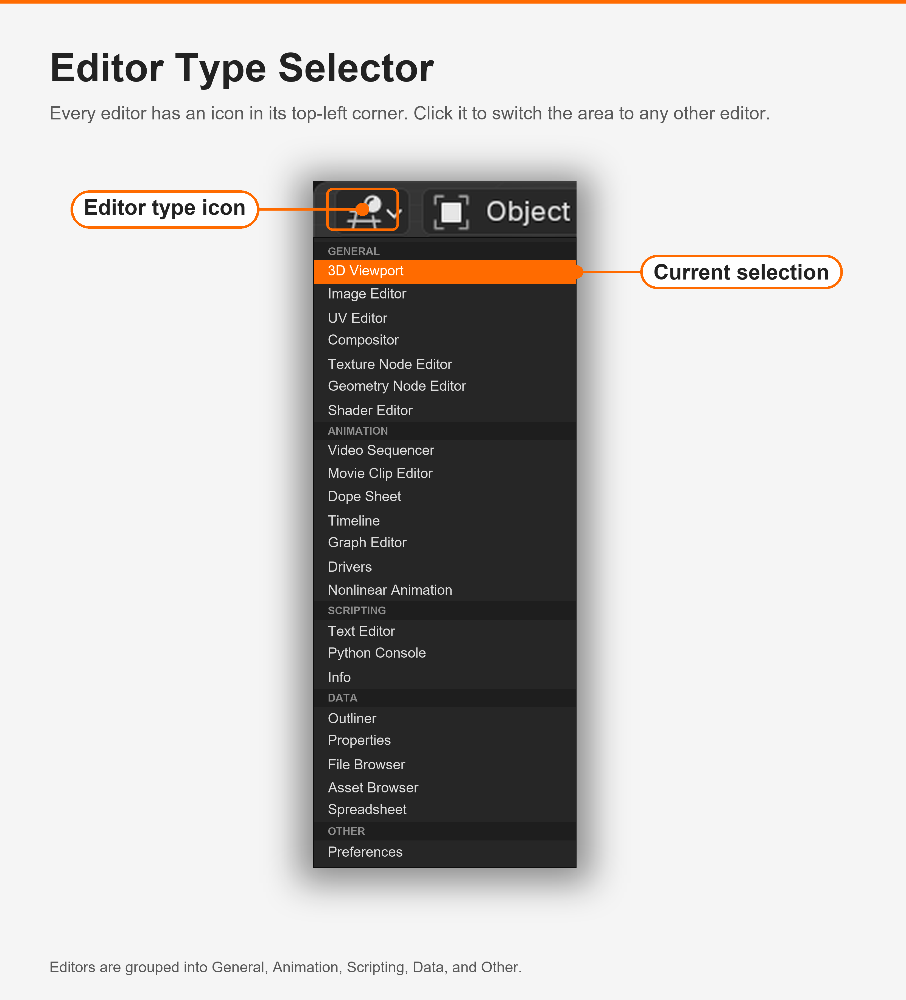
✅ Try It Now: Changing Editors
Let's practice changing an editor type:
- Find your Timeline at the bottom of the screen
- Click the Editor Type icon in its top-left corner
- Change it to "Shader Editor" from the menu
- Notice how the Timeline disappeared and was replaced with a different editor
- Now change it back to Timeline using the same method
Congratulations! You just customized your Blender interface. This flexibility is one of Blender's greatest strengths.
Splitting and Joining Areas
You can create new areas by splitting existing ones, or combine areas by joining them. This is how you build custom layouts that match your workflow.
Splitting an Area
To split an area into two:
- Hover your mouse over the corner of any area (top-right or top-left)
- Your cursor will change to a crosshair (+)
- Right-click and select "Horizontal Split" or "Vertical Split"
- Or simply press and drag from the corner to create a split line
- Release to confirm the split
Joining Areas
To join two adjacent areas:
- Hover over the border between two areas
- Right-click on the border
- Select "Join Areas"
- Move your mouse toward the area you want to keep
- The area that will be removed shows with an arrow—click to confirm
⚠️ Don't Worry About Breaking Things
You can't "break" Blender by rearranging your interface. If you mess up your layout completely, you can always:
- Click a different workspace tab at the top (like "Modeling") and back to "Layout"
- Or go to File → Defaults → Load Factory Settings to reset everything
So experiment freely! The best way to learn is by doing.
Resizing Areas
You can resize any area by clicking and dragging on the border between areas. The cursor will change to show you can resize when you're in the right position. This is perfect for temporarily giving yourself more space in one editor while working.
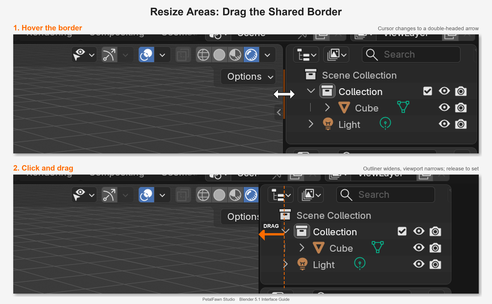
Pro Workflow: Many artists create custom layouts for different projects. A character artist might have large viewports and a small outliner, while a technical artist might prefer large shader and node editors. As you progress, you'll develop your own preferences.
🎨 The 3D Viewport: Your Canvas
The 3D Viewport is where the magic happens. This is your window into the three-dimensional world you're creating. Let's explore it in detail.
Understanding the Viewport
Think of the 3D Viewport as a camera looking into your scene. You can move this camera around to view your work from any angle—above, below, inside, or far away. The viewport shows you a real-time preview of your 3D scene.
In the default scene, you should see three objects:
- Cube: A simple 3D cube—the traditional starting object in 3D software
- Camera: Looks like a wireframe pyramid—defines what will be rendered in final images
- Light: Appears as a small point or sun icon—illuminates your scene
Viewport Header
At the top of the 3D Viewport, you'll see a header bar packed with icons and options. Let's decode the most important ones from left to right:
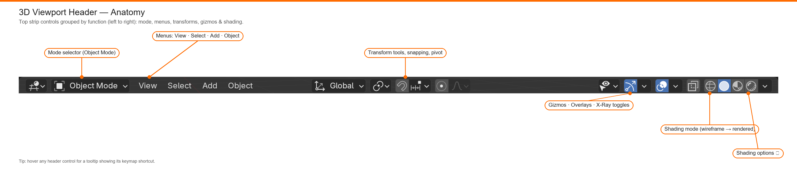
View Controls (Left Side)
- Editor Type Icon: Shows you're in the 3D Viewport (can change editor type)
- Mode Menu: Switches between Object Mode, Edit Mode, Sculpt Mode, etc.
- View Menu: Camera views, orthographic options, and viewport settings
- Select Menu: Various selection tools and options
- Add Menu: Add new objects to your scene (mesh, light, camera, etc.)
Tool Icons (Center-Left)
These icons represent different tools you can use. The exact icons depend on which mode you're in:
- Select tool (arrow cursor)
- Move tool (four-way arrow)
- Rotate tool (circular arrow)
- Scale tool (small cube)
- Transform tool (combines move, rotate, scale)
Shading and Overlay Options (Right Side)
- Shading modes: Four circles showing different viewport display modes
- X-Ray toggle: See through objects
- Overlays toggle: Show/hide guides, wireframes, and helper elements
- Gizmos toggle: Show/hide the transformation gizmo arrows
Shading Modes Explained
The four circular icons on the right side of the viewport header control how objects are displayed. These are crucial for different stages of your work:
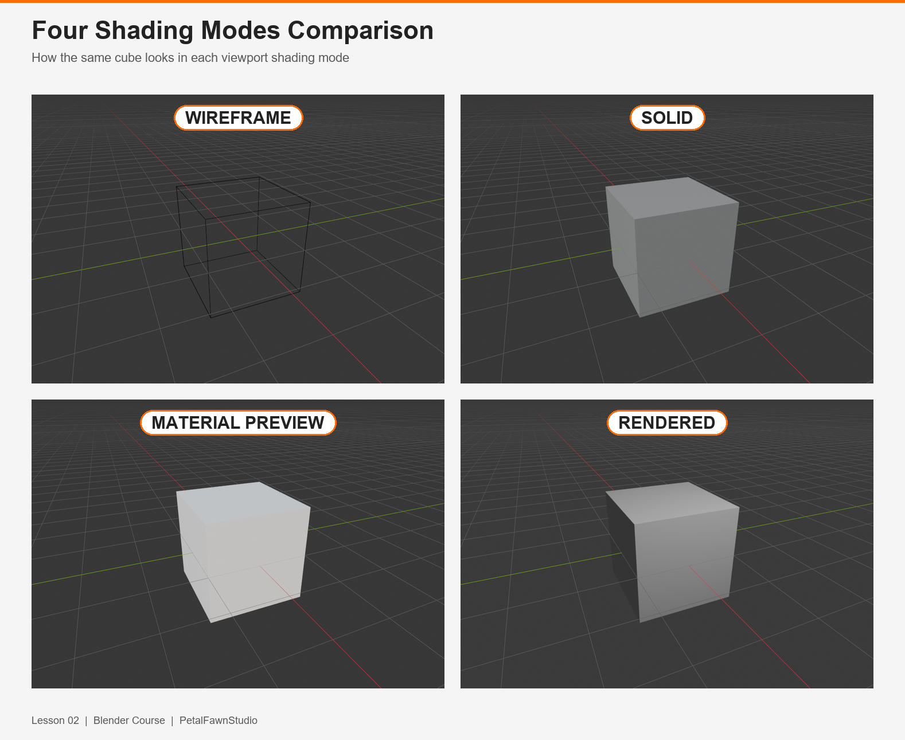
🔵 Wireframe Mode (First Circle)
Shows only the edges of your geometry as lines. Perfect for seeing the structure of dense meshes or viewing through objects. Like seeing the skeleton of your model.
⚪ Solid Mode (Second Circle)
Shows objects as solid forms with simple shading. This is the default mode and where you'll spend most of your modeling time. Fast and clear, perfect for working on geometry.
🔴 Material Preview (Third Circle)
Shows a preview of materials with basic lighting. Great for getting a sense of how textures and materials look without doing a full render. Uses simplified lighting for speed.
🟡 Rendered Mode (Fourth Circle)
Shows your scene as it will appear in the final render, complete with accurate lighting, shadows, and materials. Most resource-intensive but gives you the real picture. Like a live preview of your final result.
💡 Try It Now: Shading Modes
Click each of the four shading mode circles and observe how the cube appears differently in each mode. Notice how your computer handles each mode—Rendered mode may be slower on older hardware. Press Z to bring up a quick shading menu too!
The Toolbar and Sidebar
On the left edge of the viewport, you'll see a vertical strip of icons—this is the Toolbar. It contains your main tools for creating and manipulating objects. You can hide or show it by pressing T.
On the right edge (if visible), there's a Sidebar with tabs labeled Item, Tool, and View. This contains properties and settings for selected objects and tools. Toggle it on or off with N.
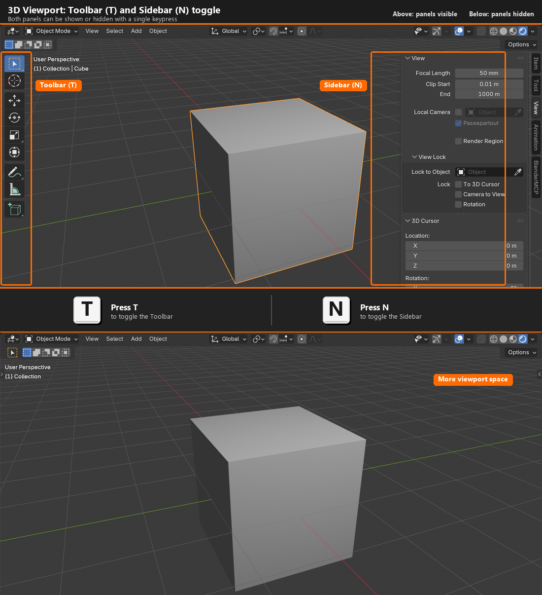
✅ Essential Viewport Shortcuts
T- Toggle Toolbar on/offN- Toggle Sidebar on/offZ- Shading mode pie menu~(tilde) - View pie menuHome- Frame all objects in viewNumpad .- Frame selected object
Don't worry about memorizing these yet—we'll practice them as we go!
The Grid and Orientation
You'll notice a grid in your viewport with two perpendicular lines—one red, one green. These lines represent the X and Y axes. The vertical axis (up and down in your scene) is Z, though it's not always visible as a line.
This grid helps you understand the space you're working in. The center point where the axes meet is called the origin or world center—think of it as the "zero point" of your 3D universe. It's at coordinates X:0, Y:0, Z:0.
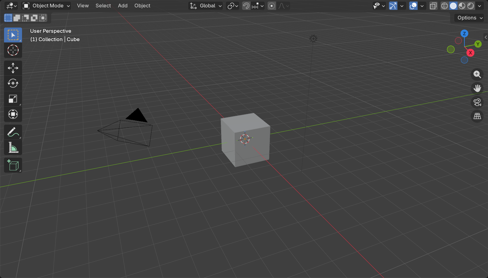
Real-World Analogy: Imagine you're in a room. The floor is the XY plane, and height is the Z axis. The red line points toward one wall (X direction), the green line points toward another wall (Y direction), and up toward the ceiling is Z. This helps you think spatially about your 3D scene.
🏗️ Workspaces: Different Tools for Different Jobs
Remember those tabs at the very top of Blender's window? Those are workspaces, and they're one of Blender's smartest organizational features.
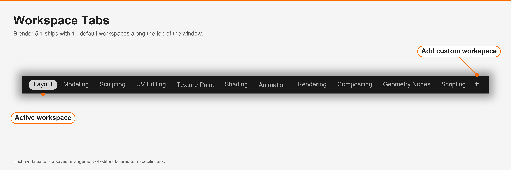
What Are Workspaces?
A workspace is a saved arrangement of areas and editors optimized for a specific task. Instead of manually rearranging your interface every time you switch from modeling to texturing to animation, you simply click a different workspace tab.
Think of workspaces like different rooms in a workshop. Your woodworking room has saws and sanders arranged for that work. Your painting room has easels and brushes laid out. Your assembly room has space to put things together. You move between rooms depending on what you're doing. Blender's workspaces work exactly the same way.
Default Workspaces
Blender comes with several pre-configured workspaces. Let's tour them:
🏠 Layout
The general-purpose workspace. Good for overall scene assembly, basic modeling, and getting familiar with Blender. This is where you start and where you'll return for general work.
🔧 Modeling
Optimized for creating and editing 3D geometry. Provides better access to modeling tools and often shows multiple viewport angles simultaneously for precision work.
🎨 Sculpting
Set up for organic modeling using brush-based sculpting tools. Large viewport focused on detailed form manipulation, similar to digital clay sculpting.
📐 UV Editing
Split view showing both your 3D model and the UV layout. Essential for preparing models for texturing by "unwrapping" 3D surfaces into 2D maps.
🖌️ Texture Paint
For painting textures directly onto 3D models. The viewport sits next to an image editor, so you can paint in 3D and watch the unwrapped 2D texture update at the same time.
💡 Shading
For building materials with the node-based Shader Editor. The viewport runs in Material Preview or Rendered mode so changes to the shader graph show up on your model in real time.
🎬 Animation
For keyframing and timing motion. Combines the viewport with the Dope Sheet and Timeline so you can scrub through frames and edit keyframes without switching editors.
🖼️ Rendering
For checking final render results in the Image Editor. Use this workspace when running a render to view, compare, and save out the finished image.
🎞️ Compositing
For post-processing renders with the node-based Compositor. Add color grading, glare, blur, and other finishing touches without leaving Blender.
🔗 Geometry Nodes
For building procedural geometry with the Geometry Nodes editor. Generate, scatter, and modify meshes using a node graph instead of editing them by hand.
📜 Scripting
For writing Python scripts and add-ons. Pairs the Text Editor and Python Console with the viewport so you can run code that drives Blender directly.
Creating Custom Workspaces
As you become more experienced, you might want to create your own custom workspaces tailored to your specific workflow. Here's how:
- Arrange your interface exactly how you want it (split areas, change editors, resize panels)
- Click the
+button next to the workspace tabs - Name your new workspace
- Your custom workspace is now saved and will appear in the tabs
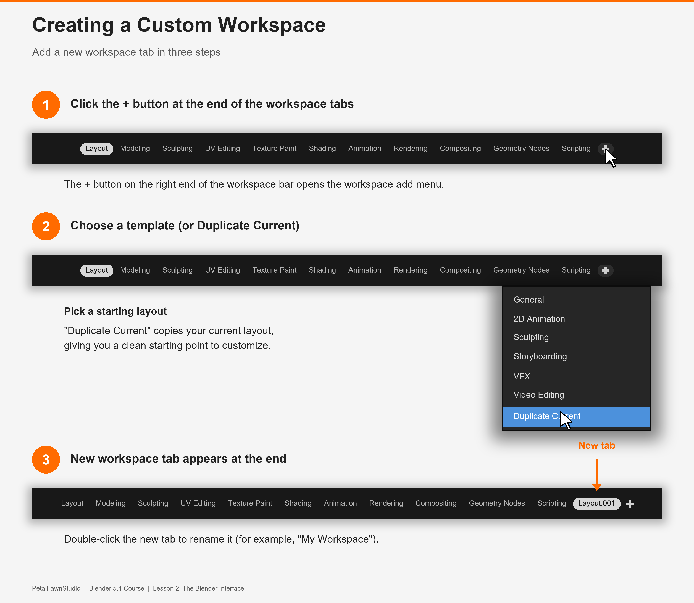
You can delete custom workspaces by right-clicking on the tab and selecting "Delete Workspace." Don't worry—you can't delete the default workspaces that come with Blender.
Professional Practice: Many studios create custom workspaces for their pipelines. A game asset artist might have a workspace optimized for low-poly modeling and baking. A character artist might have one focused on sculpting with reference images. As you develop your style, you'll naturally create workspaces that support your way of working.
🔑 Essential Editors You'll Use Daily
While Blender has over 20 editor types, you'll spend most of your time in just a handful of them. Let's explore the most important ones in detail.
The Outliner: Your Scene's Family Tree
The Outliner shows everything in your scene in a hierarchical list. Think of it as the table of contents for your 3D project, or the family tree showing how objects relate to each other.
What You See in the Outliner
By default, you'll see entries like:
- Scene Collection: The top-level container for everything in your scene
- Camera: Your render camera (what the final image shows)
- Cube: The default starting object
- Light: The default light source
Each object has small icons next to it:
- Eye icon: Toggle visibility in the viewport (hide/show)
- Arrow icon: Disable/enable selection (prevent accidental clicking)
- Camera icon: Disable/enable rendering (won't appear in final renders)
- Monitor icon: Toggle viewport display
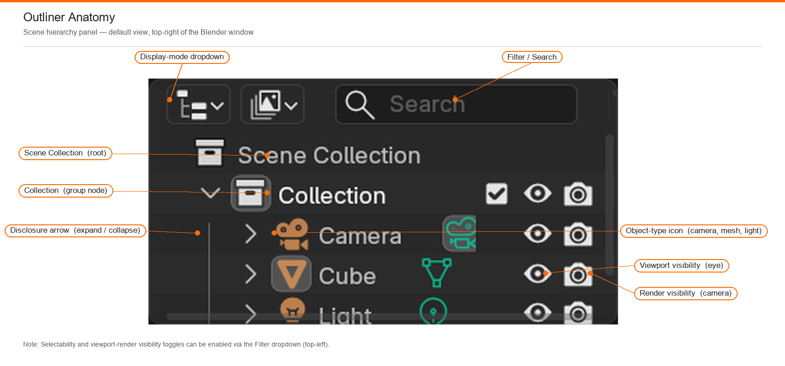
✅ Try It Now: Using the Outliner
- Find your Outliner (usually top-right of the interface)
- Click the eye icon next to "Cube"—watch it disappear from the viewport!
- Click the eye icon again to show it
- Click on "Light" in the Outliner—notice it becomes selected in the viewport
The Outliner is your quick navigation tool for complex scenes with dozens or hundreds of objects.
Why the Outliner Matters
As your scenes grow more complex, the Outliner becomes invaluable. Imagine working on a city scene with hundreds of buildings, thousands of props, dozens of lights, and multiple cameras. Finding and selecting specific objects in the 3D viewport would be tedious. The Outliner lets you quickly locate, select, hide, or organize anything in your scene.
Properties Panel: Your Control Center
The Properties panel is where you adjust settings for almost everything in Blender. It's organized into sections, each represented by an icon.
Properties Panel Sections (Top to Bottom)
🔧 Active Tool and Workspace Settings
Settings for the currently selected tool and workspace. Context-sensitive based on what you're doing.
🎬 Scene Properties
Global settings for your entire scene: units of measurement, frame rate for animation, and overall scene organization.
🎥 Render Properties
Everything related to rendering your final images: render engine choice (Eevee or Cycles), sampling quality, output resolution, and performance settings.
📐 Output Properties
Where rendered images get saved, file format (PNG, JPEG, etc.), resolution dimensions, and frame range for animations.
📋 View Layer Properties
Advanced render layer settings for compositing. Don't worry about this yet—you'll learn it when we cover compositing.
🌍 World Properties
Environment settings: background color, HDRI environment lighting, mist effects, and ambient lighting.
📦 Object Properties
Settings specific to the selected object: location, rotation, scale, and viewport display options. This is where you see and manually adjust an object's transform values.
🔨 Modifier Properties
Non-destructive operations that alter geometry: subdivision surface, mirror, array, and dozens of other powerful modifiers. We'll explore these extensively in later lessons.
⚙️ Particle Properties
Particle systems for hair, fur, grass, smoke, fire, and other effects that require thousands or millions of elements.
💨 Physics Properties
Simulation settings: cloth, fluid, rigid body dynamics, soft body, and collision properties for realistic physical behavior.
🎨 Material Properties
Material and shader settings for the selected object. This is where you assign materials, adjust colors, roughness, metallic properties, and more.
🖼️ Texture Properties (Legacy)
Older texture system, mostly unused in modern workflows. Modern texturing happens in the Shader Editor instead.
💡 Context-Sensitive Properties
The Properties panel shows different options depending on what you have selected. Select the cube and you'll see object properties, material properties, and modifier properties. Select the light and you'll see light-specific properties. This smart behavior keeps the interface relevant to your current work.
Timeline: Your Animation Control
The Timeline editor at the bottom of the screen is your animation control center. Even if you're not animating yet, understanding it helps you navigate Blender.
Key elements of the Timeline:
- Playhead: The blue vertical line showing the current frame
- Frame numbers: Each number represents one frame of animation
- Playback controls: Play, pause, jump to start/end
- Frame range: Start and end frame numbers for your animation
For now, just know it exists. We'll dive deep into animation in Module 6.
Shader Editor: Material Creation
The Shader Editor is where you create and edit materials using a node-based system. Think of it as a visual programming interface for designing how surfaces look.
You'll see it prominently when you switch to the "Shading" workspace. We'll spend considerable time here in Module 3 when we cover materials and texturing. For now, just know that this powerful editor is where the magic of realistic surfaces happens.
Node-Based Workflow: Many modern creative tools use node systems—connecting boxes with lines to create complex behaviors. Blender's shader nodes, geometry nodes, and compositor all use this approach. Once you learn one node system, the others become much easier to understand.
⚙️ Customizing Your Interface
Blender is highly customizable, allowing you to create an interface that matches your workflow perfectly. Let's explore the most useful customization options.
Preferences: Your Personal Settings
Access Blender's preferences by going to Edit → Preferences (or Blender → Preferences on Mac). This is where you customize Blender's behavior globally.
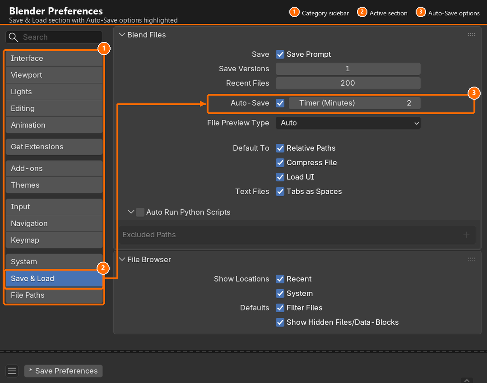
Key Preference Categories
🖱️ Input
Mouse and keyboard settings. This is where you can switch between left and right mouse button for selection, adjust mouse sensitivity, and customize keyboard shortcuts.
🎨 Themes
Change Blender's color scheme. Some artists prefer darker themes for long work sessions, others like lighter themes. Experiment to find what's easiest on your eyes.
⚡ System
Performance settings: GPU rendering, memory limits, and hardware acceleration. Important for optimizing Blender to your computer's capabilities.
💾 Save & Load
Auto-save frequency, default file locations, and what gets saved with your files. Setting up auto-save properly can save you from heartbreak!
✅ Recommended Preference Changes
For beginners, consider these helpful adjustments:
- Go to Edit → Preferences → Save & Load
- Enable "Auto Save" if it isn't already
- Set Auto Save interval to 2-5 minutes
- This creates backup files automatically in case of crashes
Quick Favorites Menu
You can create a custom menu of your most-used functions accessible with a single key press:
- Right-click on any menu item, button, or operator
- Select "Add to Quick Favorites"
- Access your favorites anytime by pressing
Q - Build a collection of frequently-used operations
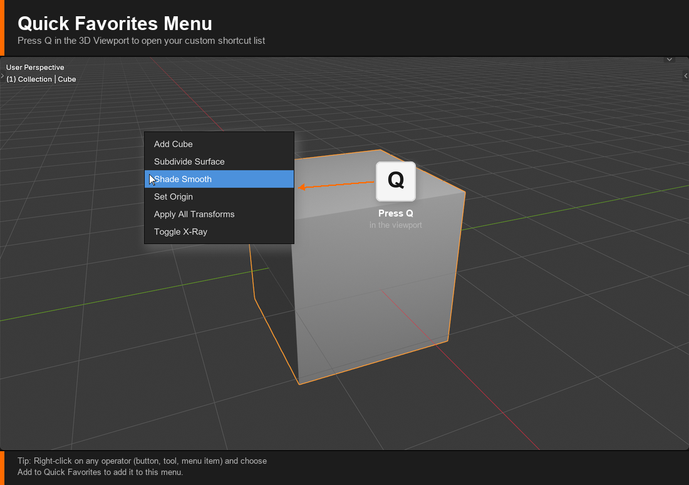
This is incredibly powerful for speeding up your workflow once you know which operations you use most frequently.
Interface Scaling
If Blender's text and buttons seem too small or too large for your screen:
- Go to Edit → Preferences → Interface
- Adjust "Resolution Scale" slider
- The interface will resize in real-time
- Find a size that's comfortable for your display and eyesight
Saving Your Preferences
Changes you make in Preferences are automatically saved. However, if you've customized your interface layout and want that to be your new default:
- Arrange your interface exactly how you want it
- Go to File → Defaults → Save Startup File
- Now every new Blender file will open with your layout
⚠️ Customization Caution
While customization is powerful, don't go overboard immediately. Work with the default setup for a while first. As you learn what you actually use frequently, then start customizing. Premature customization can be counterproductive—you might hide features you'll later need!
Learn First, Customize Later: Professional artists often say the same thing: learn the default interface first, understand why things are where they are, then customize based on your actual workflow needs. This approach prevents you from optimizing for imagined problems rather than real ones.
🎯 Project: Navigate and Customize
Now it's time to put your interface knowledge into practice. This hands-on project will help you become comfortable navigating Blender's interface and making it your own.
Project Overview
You'll complete a series of exercises that cover all the key interface elements we've discussed. Take your time with each step, and don't worry about perfection—this is about building familiarity and muscle memory.
💡 Project Goal
By the end of this project, you'll be able to confidently navigate Blender's interface, switch between workspaces, change editor types, and customize your layout. These foundational skills will serve you throughout your entire Blender journey.
Part 1: Workspace Exploration
Exercise 1: Tour All Workspaces
- Open Blender with a new file (File → New → General)
- Click through each workspace tab at the top: Layout, Modeling, Sculpting, UV Editing, Texture Paint, Shading, Animation, Rendering, Compositing, Geometry Nodes
- For each workspace, spend 30 seconds observing the layout
- Notice which editors are visible in each workspace
- Return to the Layout workspace
What you're learning: Familiarization with different workspace layouts and their purposes.
Exercise 2: Practice Workspace Switching
- Start in Layout workspace
- Switch to Modeling workspace
- Switch to Shading workspace
- Switch back to Layout workspace
- Try using
Ctrl + Page UpandCtrl + Page Downto cycle through workspaces - Find which method feels more natural to you
What you're learning: Quick workspace navigation for efficient workflow.
Part 2: Editor Type Mastery
Exercise 3: Change Editor Types
- In Layout workspace, find your Timeline at the bottom
- Click the editor type icon (top-left of Timeline)
- Change it to "Shader Editor"
- Change it to "Outliner"
- Change it to "Properties"
- Change it back to "Timeline"
- Observe how the content completely changes with each editor type
What you're learning: Any area can display any editor—total flexibility.
Exercise 4: Split and Join Areas
- Hover your mouse over the top-right corner of the 3D Viewport
- When cursor changes to crosshair, press and drag down to create a horizontal split
- You now have two viewports!
- Change the bottom viewport to "Shader Editor" using the editor type icon
- Now practice joining: right-click on the border between your two viewports
- Select "Join Areas"
- Move mouse toward the area you want to keep and click
- Your layout is back to normal
What you're learning: Creating custom layouts by splitting and joining areas.
Exercise 5: Resize Areas
- Place your cursor on the border between the 3D Viewport and the Outliner
- When cursor changes to a double arrow, press and drag
- Make the Outliner larger
- Make it smaller again
- Try resizing other borders in your interface
- Find a comfortable size for each area
What you're learning: Adjusting area sizes for better visibility and workflow.
Part 3: Viewport Proficiency
Exercise 6: Shading Mode Practice
- Ensure you're in the Layout workspace with the default cube visible
- Click the first shading mode circle (Wireframe) - observe the cube
- Click the second circle (Solid) - observe the change
- Click the third circle (Material Preview) - see the lighting preview
- Click the fourth circle (Rendered) - see the full render preview
- Now press
Zto bring up the shading pie menu - Move your mouse to select different shading modes
- Practice switching between modes using both methods
What you're learning: Different viewport display modes for different tasks.
Exercise 7: Toggle Panels
- Press
Tto hide the Toolbar on the left - Press
Tagain to show it - Press
Nto show/hide the Sidebar on the right - Toggle both panels a few times
- Leave them both visible for now
What you're learning: Creating more viewport space when needed.
Part 4: Outliner Operations
Exercise 8: Use the Outliner
- Find the Outliner (usually top-right area)
- Click on "Cube" in the Outliner—observe it becomes selected in viewport
- Click the eye icon next to "Cube"—it disappears from viewport
- Click the eye icon again—it reappears
- Click on "Light" in the Outliner—it becomes selected
- Click on "Camera" in the Outliner—it becomes selected
- Try clicking the eye icons for Light and Camera
- Make everything visible again
What you're learning: Using the Outliner for selection and visibility control.
Part 5: Properties Panel Navigation
Exercise 9: Explore Properties
- Ensure the Cube is selected (click it in viewport or Outliner)
- Find the Properties panel (right side, usually)
- Click the orange cube icon (Object Properties)
- Find the Transform section—you'll see Location, Rotation, Scale values
- Click the wrench icon (Modifier Properties)
- Click the sphere icon (Material Properties)
- Click through a few other property tabs to see what's available
- Don't worry about understanding everything—just get familiar with the layout
What you're learning: Where to find different types of properties and settings.
Part 6: Create a Custom Workspace
Exercise 10: Build Your Own Workspace
- Start from the Layout workspace
- Split the 3D Viewport horizontally so you have two viewport areas
- Change the bottom area to "Shader Editor"
- Make the Shader Editor take up about 1/3 of the vertical space
- Click the
+button next to the workspace tabs - Name your workspace "My Custom Workspace"
- Your custom workspace now appears in the tabs!
- Click between different workspaces and back to yours
- Notice your custom layout is preserved
What you're learning: Creating personalized workspace layouts.
Part 7: Preferences Setup
Exercise 11: Configure Auto-Save
- Go to Edit → Preferences (or Blender → Preferences on Mac)
- Click on "Save & Load" in the left sidebar
- Find the "Auto Save" section
- Ensure "Auto Save" is checked (enabled)
- Set "Timer (mins)" to 3 or 5 minutes
- This will automatically save backup copies of your work
- Close the Preferences window
What you're learning: Setting up important safety features.
Exercise 12: Try a Different Theme (Optional)
- Go to Edit → Preferences → Themes
- Click the "Presets" dropdown at the top
- Try "Blender Light" or other available themes
- See which you prefer—darker themes or lighter ones
- Choose the one most comfortable for your eyes
- Close Preferences—your choice is automatically saved
What you're learning: Personalizing Blender's appearance for comfort.
Success Checklist
✅ Project Completion
You've successfully completed this project when you can:
- ✅ Switch between different workspaces confidently
- ✅ Change any area to any editor type
- ✅ Split areas to create new divisions
- ✅ Join areas to simplify layouts
- ✅ Resize areas by dragging borders
- ✅ Switch between all four shading modes
- ✅ Toggle Toolbar (T) and Sidebar (N)
- ✅ Use the Outliner to select and hide objects
- ✅ Navigate the Properties panel sections
- ✅ Create a custom workspace
- ✅ Configure auto-save in preferences
- ✅ Feel comfortable exploring the interface
Bonus Challenges
If you want to go further and cement your understanding:
🌟 Challenge 1: Speed Test
Time yourself switching between workspaces and editors:
- Start in Layout, switch to Modeling, then Shading, then back to Layout
- Change Timeline to Shader Editor and back
- Hide and show the Toolbar and Sidebar
- Cycle through all four shading modes
Do this sequence three times and notice how you get faster each time!
🌟 Challenge 2: Custom Layout for Modeling
Create a custom workspace optimized for modeling:
- Large 3D Viewport in the center
- Outliner visible on the right
- Properties panel on the far right
- Small Shader Editor at the bottom
- Save it as "My Modeling Space"
🌟 Challenge 3: Add to Quick Favorites
Start building your Quick Favorites menu:
- Try right-clicking on various menu items
- Select "Add to Quick Favorites" for items you think you'll use often
- Press
Qto see your custom menu - You can always remove items later as you learn your workflow
Practice Makes Perfect: The interface will feel more natural every time you use Blender. What seems like a lot to remember now will become automatic within a few sessions. Your fingers will start pressing shortcuts without conscious thought, and you'll navigate between editors fluidly. Trust the process!
📝 Lesson Summary
Congratulations! You've completed your deep dive into Blender's interface. Let's recap what you've learned.
🎓 Key Takeaways
- Blender's interface is organized into areas and editors—flexible regions that can display different tools and views
- Workspaces are pre-configured layouts optimized for specific tasks like modeling, shading, or animation
- The 3D Viewport is your main canvas with four shading modes for different stages of work
- The Outliner provides a hierarchical view of everything in your scene for quick navigation
- The Properties panel is your control center for adjusting settings across all aspects of your project
- Customization is built-in—split, join, resize, and configure to match your workflow
- Keyboard shortcuts accelerate workflow—learn them gradually as you work
What You've Accomplished
In this lesson, you:
- Learned the philosophy behind Blender's interface design
- Explored all the default workspaces and their purposes
- Mastered changing editor types in any area
- Practiced splitting, joining, and resizing areas
- Became familiar with the 3D Viewport and its many options
- Understood the Outliner's role in scene organization
- Navigated the comprehensive Properties panel
- Created your own custom workspace
- Configured important preferences like auto-save
- Completed hands-on exercises to build muscle memory
Essential Shortcuts You Learned
⌨️ Interface Navigation Shortcuts
| Shortcut | Action |
T |
Toggle Toolbar |
N |
Toggle Sidebar |
Z |
Shading mode pie menu |
Q |
Quick Favorites menu |
Ctrl + Page Up/Down |
Cycle through workspaces |
Home |
Frame all objects in view |
Don't worry about memorizing these all at once—they'll become natural with use!
Common Questions at This Stage
❓ "There are so many buttons and options—do I need to know them all?"
Absolutely not! Professional Blender artists use maybe 20-30% of the available features regularly. You'll naturally discover and learn features as you need them for specific projects. Focus on understanding the basic interface organization rather than memorizing every button.
❓ "Should I create custom workspaces right away?"
Use the default workspaces first to understand why they're organized the way they are. After you've worked on a few projects and developed preferences, then start creating custom workspaces. Early customization often solves imaginary problems rather than real workflow issues.
❓ "I keep accidentally changing things—is there an undo?"
Yes! Ctrl + Z (or Cmd + Z on Mac) undoes actions in the viewport. For interface changes, you can reload your startup file or switch workspaces to reset layouts. Nothing you do to the interface is permanent—experiment freely!
❓ "Why does Blender use so many keyboard shortcuts?"
Blender's shortcut system was designed by professional animators and VFX artists who needed speed. While you can use menus for everything, shortcuts dramatically accelerate workflow. Learn them gradually—start with the most common ones and add more as you go.
Looking Ahead: Next Lesson
Now that you're comfortable with the interface, it's time to actually start working in 3D space! In the next lesson, we'll cover:
- Navigation: Moving around the 3D viewport like a pro
- Viewport controls: Orbiting, panning, and zooming
- View angles: Front, side, top, and camera views
- Essential mouse and keyboard combinations for fluid navigation
- Camera movement: Understanding perspective vs. orthographic views
Being able to navigate smoothly through 3D space is fundamental—it's like learning to walk before you run. Master this, and everything else in Blender becomes easier.
💡 Before the Next Lesson
Reinforce your learning by:
- Opening Blender and clicking through different workspaces
- Practicing the interface shortcuts (T, N, Z, Q) until they feel natural
- Creating a custom workspace just for fun
- Writing in your learning journal about which aspects of the interface feel intuitive and which feel confusing
Repetition builds muscle memory. The more you interact with the interface, the more automatic it becomes.
Embrace the Learning Process
If the interface still feels overwhelming, that's completely normal. You've just been introduced to a professional-grade tool with decades of development behind it. Nobody expects you to master it in one lesson.
Remember: every expert Blender artist once sat exactly where you are, feeling unsure about where things are and how to navigate. The difference between them and beginners who gave up? They kept practicing. They gave themselves permission to feel confused temporarily while their brain processed the new patterns.
You're building a foundation right now. Every time you open Blender, every time you switch workspaces, every time you change an editor or adjust your layout, you're reinforcing neural pathways that will make this feel effortless soon.
🎯 You've Conquered the Interface!
You now understand how Blender is organized, how to navigate its various editors, and how to customize your workspace. These skills form the foundation for everything you'll create.
Next up: We're going to move around in 3D space and start feeling like a real 3D artist!